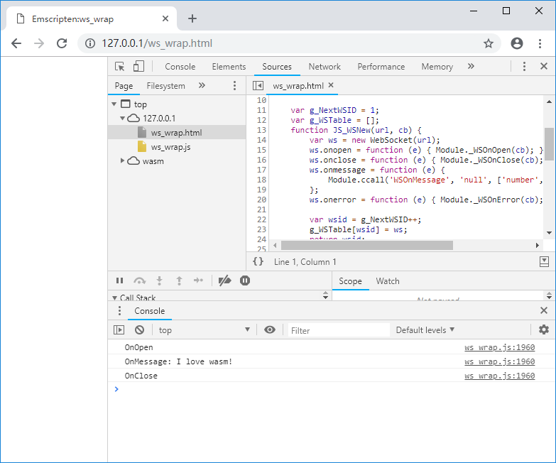

5.2 WebSocket
本节将介绍在Emscripten中使用WebSocket的方法。
5.2.1 WebSocket简介
WebSocket协议在2011年已成为国际标准，目前主流浏览器均已支持。与HTTP协议相比，WebSocket有如下特点：
- WebSocket是长连接协议，一次握手连接成功后，可以多次发送数据；
- 不同于HTTP只能由客户端发起单向请求，WebSocket是双向协议，连接建立后，客户端和服务器都可以主动向对方发送数据；
- WebSocket既可以发送文本数据，也可以发送二进制数据；
- WebSocket没有同源限制；
- 非加密的WebSocket以
ws为协议标识符，使用TCP协议封装；加密的WebSocket以wss为协议标识符，使用TLS协议封装。
为了方便测试，我们先创建一个简单的WebSocket echo服务。笔者在此选择Go语言来创建该服务，代码如下：
//ws_echo.go
package main
import (
"fmt"
"log"
"net/http"
"syscall"
"golang.org/x/net/websocket"
"os"
"os/signal"
)
func main() {
log.Println("ws_echo start...")
wsPort := 40001
go func() {
log.Println(fmt.Sprint("WebSocket:", wsPort, " Listening ..."))
http.Handle("/ws_echo", websocket.Handler(webSocketHandler))
err := http.ListenAndServe(fmt.Sprint(":", wsPort), nil)
if err != nil {
panic("ListenAndServe: " + err.Error())
}
}()
httpPort := 80
go func() {
log.Println(fmt.Sprint("http:", httpPort, " Listening ..."))
err := http.ListenAndServe(fmt.Sprint(":", httpPort),
http.FileServer(http.Dir("./")))
if err != nil {
panic("ListenAndServe: " + err.Error())
}
}()
ch := make(chan os.Signal, 1)
signal.Notify(ch, syscall.SIGINT, syscall.SIGTERM)
log.Printf("ws_echo quit (%v)\n", <-ch)
}
func webSocketHandler(ws *websocket.Conn) {
ws.PayloadType = websocket.TextFrame
defer ws.Close()
rtemp := make([]byte, 32768)
for {
n, err := ws.Read(rtemp)
if err != nil {
log.Println("Error:Read:", err)
return
}
n, err = ws.Write(rtemp[:n])
}
}
上述代码在80端口启动了当前文件夹的静态页面服务用于发布测试用的html文件；并在40001端口的/ws_echo路径启动了WebSocket echo服务，该服务建立WebSocket连接后，会将客户端发来的数据原样发回去。安装Go语言环境后，使用下列命令启动程序：
go run ws_echo.go
5.2.2 在JavaScript中使用WebSocket
在JavaScript中使用WebSocket()构造函数创建WebSocket对象，WebSocket.send()方法用于发送数据，WebSocket.onmessage()属性用于指定处理接收到的数据的回调函数，例如：
//websocket_js.html
var ws = new WebSocket("ws://localhost:40001/ws_echo");
ws.onopen = function(e) {
console.log("ws.onopen");
ws.send("Hello world!");
}
ws.onmessage = function(e) {
console.log("ws.onmessage: " + e.data);
ws.close();
}
ws.onclose = function(e) {
console.log("ws.onclose");
}
ws.onerror = function(e) {
console.log("ws.onerror");
}
上述代码创建了与ws://localhost:40001/ws_echo的WebSocket连接，连接成功后发送了"Hello world!"，WebSocket echo服务将收到的数据发回后，ws.onmessage()将收到的数据通过日志打印：

5.2.3 WebSocket对象的C接口封装
与5.1节介绍的XMLHttpRequest封装方法类似，WebSocket对象的C接口封装分为两个部分：
- 由JavaScript实现，供C调用。包括创建WebSocket对象、发送数据等主动行为；
- 由C实现，供JavaScript调用。包括各种事件的回调。
来看C部分的代码：
//ws_wrap.cpp
struct WS_WRAPPER;
struct WS_CB;
//imp by JavaScript, call by C:
EM_PORT_API(struct WS_WRAPPER*) WSNew(const char *url, struct WS_CB *cb);
EM_PORT_API(int) WSSend(struct WS_WRAPPER *ws, const char *data);
EM_PORT_API(void) WSDelete(struct WS_WRAPPER *ws);
//WebSocket callback:
class CWSCallback{
public:
CWSCallback(const char *url){
m_ws = WSNew(url, (struct WS_CB*)this);
}
virtual ~CWSCallback(){}
void OnOpen(){
printf("OnOpen\n");
WSSend(m_ws, "I love wasm!");
}
void OnClose(){
printf("OnClose\n");
}
void OnMessage(const char* data){
printf("OnMessage: %s\n", data);
WSDelete(m_ws);
m_ws = NULL;
}
void OnError(){
printf("OnError\n");
}
struct WS_WRAPPER *m_ws;
};
//imp by C, call by JavaScript:
EM_PORT_API(void) WSOnOpen(struct WS_CB *cb){
if (cb == NULL) return;
CWSCallback *pc = (CWSCallback*)cb;
pc->OnOpen();
}
EM_PORT_API(void) WSOnClose(struct WS_CB *cb){
if (cb == NULL) return;
CWSCallback *pc = (CWSCallback*)cb;
pc->OnClose();
}
EM_PORT_API(void) WSOnMessage(struct WS_CB *cb, const char* data){
if (cb == NULL) return;
CWSCallback *pc = (CWSCallback*)cb;
pc->OnMessage(data);
}
EM_PORT_API(void) WSOnError(struct WS_CB *cb){
if (cb == NULL) return;
CWSCallback *pc = (CWSCallback*)cb;
pc->OnError();
}
CWSCallback wscb("ws://localhost:40001/ws_echo");
与5.1节介绍的XMLHttpRequest封装方法类似，创建WebSocket连接时，我们为它绑定了一个回调对象cb，用于处理该连接的各种回调事件。这样当程序同时启动了多个WebSocket连接时，可以为每个WebSocket连接分配不同的的回调处理对象。
导入库部分代码如下：
//pkg.js
mergeInto(LibraryManager.library, {
WSNew: function (url, cb) {
return JS_WSNew(Pointer_stringify(url), cb);
},
WSSend: function (ws, data) {
return JS_WSSend(ws, Pointer_stringify(data));
},
WSDelete: function (ws) {
return JS_WSDelete(ws);
}
})
导入库调用的JavaScript方法如下：
//ws_wrap.html
var g_NextWSID = 1;
var g_WSTable = [];
function JS_WSNew(url, cb) {
var ws = new WebSocket(url);
ws.onopen = function (e) { Module._WSOnOpen(cb); };
ws.onclose = function (e) { Module._WSOnClose(cb); };
ws.onmessage = function (e) {
Module.ccall('WSOnMessage', 'null', ['number', 'string'], [cb, e.data]);
};
ws.onerror = function (e) { Module._WSOnError(cb); };
var wsid = g_NextWSID++;
g_WSTable[wsid] = ws;
return wsid;
}
function JS_WSSend(ws, data) {
var ws = g_WSTable[ws];
ws.send(data);
}
function JS_WSDelete(ws) {
var ws = g_WSTable[ws];
ws.close();
}
整套程序综合应用了导出C++对象（4.3节）、JavaScript对象注入C（4.5节）、ccall（2.7节）等技术。使用下列命令编译：
emcc ws_wrap.cpp --js-library pkg.js -s "EXTRA_EXPORTED_RUNTIME_METHODS=['ccall']" -o ws_wrap.js
启动WebSocket echo服务，浏览页面，控制台输出如下：

出于简化代码考虑，本节给出的例子未处理反复调用WSNew()导致g_NextWSID溢出等情况。由于IO操作往往与程序逻辑强相关，实际项目中需要考虑的问题多种多样，在此无法尽述。